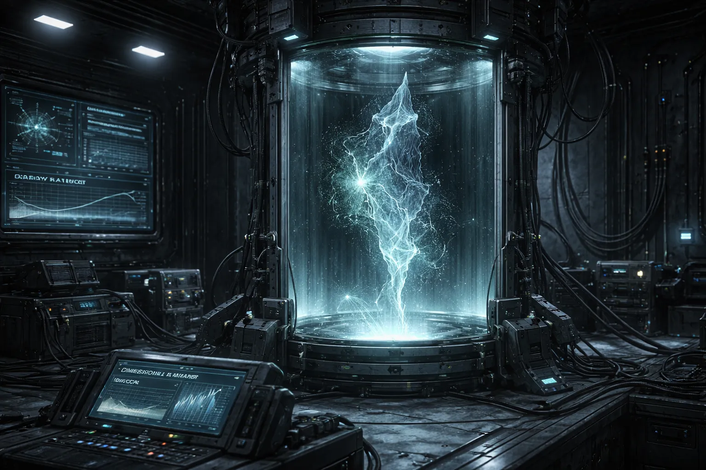
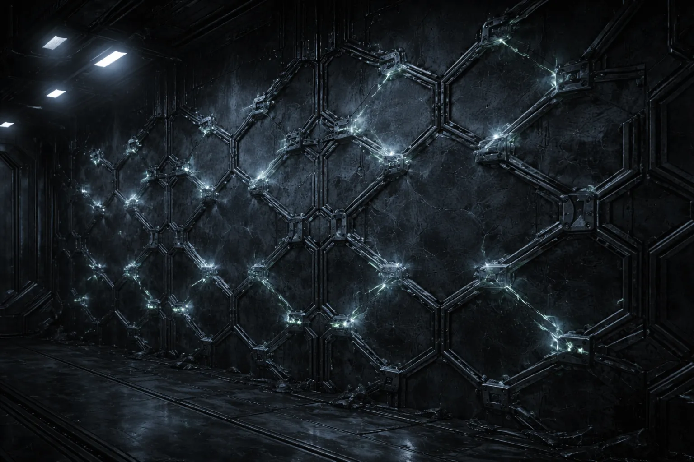

THE WEAVE
They built with dimensional filament. The filament is gone. The architecture isn't.
Half matter, half geometry.
Dimensional filament. The Compact has a name for it but no definition. The material exists at the boundary between physical matter and spatial geometry — structures that are partly solid and partly a shape that space is holding. Weave ships weren't objects. They were patterns held in tension between anchor points, frameworks that moved through Rift corridors the way a spider moves through silk.
Outside Rift space, the filament decays. Every attempt to stabilize a sample in a laboratory has failed. The material doesn't break down. It stops being material. One moment the instruments register mass and structure. The next, the sample space is empty and the instruments show no transition. The sample didn't dissolve. It simply stopped being there.

It didn't decay. Decay implies a process. This was more like the material forgot it existed.
Filament sample retention time outside Rift space: 4 to 11 seconds. Inside Rift space: indefinite. Nobody has explained the threshold.
The brackets are still there.
In deep Rift corridors, pilots find anchor points. Metallic brackets mounted to walls, ceilings, and free-floating in void space, arranged in geometric patterns. The brackets are perfectly preserved. The filaments they held are gone.
The patterns look like webs. Not metaphorically — the spatial arrangement matches orb-weaver geometry at a structural level. Compact mathematicians mapped 14 anchor arrays and found consistent ratios between radial and spiral elements. The Weave used the same engineering principles as biological web construction, scaled up to corridor-spanning infrastructure.
What the infrastructure did is unknown. The brackets show no energy residue, no data storage, no mechanical function. They held filament. The filament is gone. The brackets hold nothing and wait.

No ships. No schematics. One question.
The Weave is the only faction with no recoverable ship designs. The Foundry left manuals. The Lattice left growth chambers. The Choir left running production lines. The Fourth left a ship. The Weave left brackets.
Compact engineers have proposed reconstructing Weave technology by analyzing the anchor point geometry and inferring filament properties from the bracket mountings. The proposal has been approved, funded, and staffed three times. All three teams reported that the geometry implies properties that cannot exist in conventional materials science. All three recommended the same thing: study actual filament inside Rift space, where it persists.
The Compact has not authorized in-Rift filament research. The reason given is budget. The Outermark, which has no budget process, has also not attempted it. When asked why, an Outermark salvage captain offered a one-word answer that the interviewer did not include in the published transcript.
The brackets are waiting for something. This is not a metaphor. The mounting tension in the hardware is oriented inward, toward the empty center. They are mechanically configured to hold.